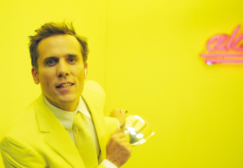

Su Steinmassl & Julia Fuhr Mann

Susanne Steinmaßl, Studium von u.a. Philosophie,
LMU, und von Dokumentarfilm, HFF München. Mitarbeit bei „Kino
der Kunst“ und den Münchner Kammerspielen. susannesteinmassl.de
Filme (Auswahl): AN TON KAUN 2014 – Intimität 2017
Julia Fuhr Mann, * 1987 in Ingolstadt. Studium u.a. der Regie, HFF München. Schwerpunkt Hybridformen aus Spiel- und Dokumentarfilm. Mitglied von ProQuote Regie.
Filme (Auswahl): Die Liebe der Mutter 2014
The ShowShow
2016 – Video, Sound – 26'
B: Susanne Steinmaßl, Julia Fuhr Mann – K: Georg Nikolaus –
Mit Manuel Löwensberg
Ein knallgelber Raum. Darin ein smarter Moderator, der über digitale Medien philosophiert. Die mal tiefgründige, mal absurde One-Man-Show des Moderators wird immer wieder von dokumentarischen Bildern aus der Ukraine unterbrochen. Ein Land im Kriegszustand – die Filmaufnahmen jedoch zeigen ruhige Straßen und friedliche Plätze. Alles nur Show?